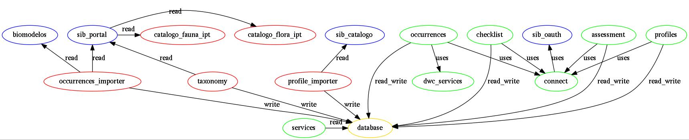

Here is suggested how to use existing tools and what is needed to be developed in this approach.
Red: need to be build; Blue: Existis; Green: Adapt from CNCFlora; Yellow: Database;
Biomodelos allow users to input occurrence data for distribution models to be generated. This models and occurrences can also be validated
This system could be used a source of occurrence data.
Catalogo da flora is the taxonomy authority for flora. It needs to publish it's data on IPT to enable import on SIB.
Does this exists? Catalogo da fauna is the taxonomy authority for fauna. It needs to publish it's data on IPT to enable import on SIB.
Sib portal here is the Occurrence Backend and taxonomy sources. It needs to import the taxonomic data from the Catalogos to provide an authorative source.
Compreheends ecological and general information about species.
Allow the same user to be used in multiple applications.
It is needed to build tools that will allow the risk assessment to posses data from the sources.
It is important to have such data local to be able to keep it's own history in case of changes on the original sources.
In the case of CNCFlora tools, it is the combination of CouchDB and ElasticSearch.
Needs to be adapted to use Sib Oauth as the authentication mechanism. Here is where the authorization profiles will be kept.
Allow the creation of databases as groups of species, important to keep the separation of work groups over time.
There are services to support operation on dwc occurrences.
Tool to upload, insert, georeference, validate and search occurrence data.
Tool to provide the workflow to work on ecology and general data.
Tool to provide the workflow to do the risk assessment.
General services to publish the data.